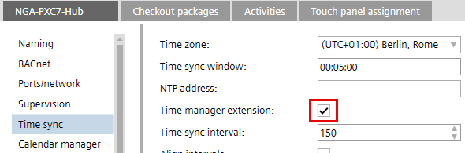
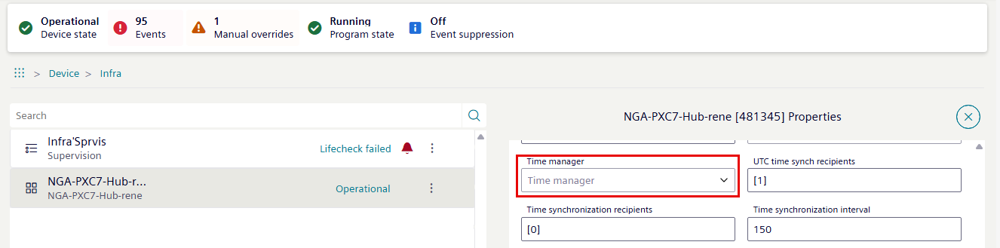

Checking time sync
A PXC5/7 device can be configured as a time manager for other PXC4-2/5/7 and DXR devices as well for third-party devices (if they allow this functionality), Devices on BACnet IP, BACnet/SC, and BACnet MS/TP.
A time manager is a dedicated device that defines and distributes the common time for the assigned devices. A common system time is important for synchronized actions (for example, schedulers or trended data). Time distribution itself is a standardized BACnet service.
The time source of the time manager is either NTP (Network Time Protocol) or built in RTC on the device.
The time manager can be configured on each device.
- Recommended number of devices for time synchronization in a PXC5/7: Up to 250 (on the same IP segment)
- Time synchronization interval: 150 minutes (default)
- Time synchronization interval value range: 1 to >1000 minutes

- The time sync is configured in ABT Site and displayed as .

- Go to the Object view tab.
- Select Device.
- Select Infrastructure > [Device name].
- Select .
- The Device properties dialog area opens.
- Checking the Time manager information.

Error handling
- Time source configuration:
- Verify that the BACnet device or system designated as the time manager or time synchronization source is properly configured.
- Ensure that the time source is set to a reliable and accurate time reference, such as an NTP server or a Desigo CC.
- Time synchronization settings:
- Check the time synchronization settings on the BACnet devices that are expected to receive the time updates.
- Ensure that the devices are properly configured to receive and apply the time synchronization information from the designated time source.
- Check the NTP server address setting if the address is reachable
- Network connectivity:
- Confirm that the BACnet devices can communicate with the designated time source over the network.
- Check for any network issues, such as connectivity problems, routing errors, or firewall configurations that could be preventing the time synchronization messages from reaching the devices.
- Time zone and daylight-saving time:
- Verify that the time zone and daylight-saving time (DST) settings are correctly configured on both the time source and the BACnet devices.
- Ensure that the time zone and DST adjustments are properly applied and synchronized across the BACnet system.
- Time synchronization interval:
- Review the time synchronization interval settings to ensure that the devices are receiving time updates at the expected frequency.
- Adjust the synchronization interval if necessary to improve the time synchronization accuracy and responsiveness.
- Time synchronization monitoring:
- Implement monitoring and logging mechanisms to track the time synchronization process and identify any issues or discrepancies.
- Regularly review the time synchronization logs to detect and troubleshoot any problems.
- Device clocks and drift:
- Check the internal clocks of the BACnet devices to ensure that they are maintaining accurate time.
- Look for any clock drift or time deviations that could be causing the time synchronization issues.
- Software and firmware updates:
- Ensure that the BACnet devices and the time source software are running the latest stable versions.
- Apply any available updates or patches that could address known time synchronization issues.